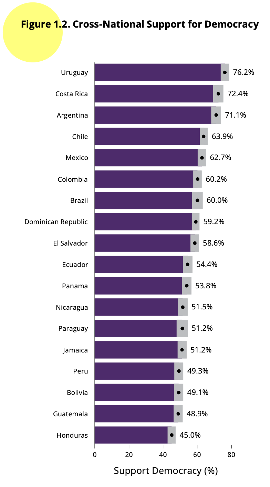
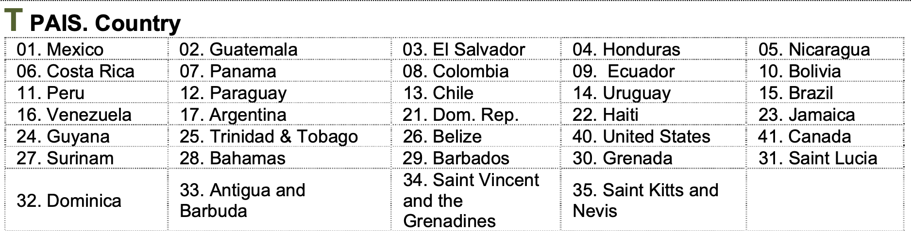
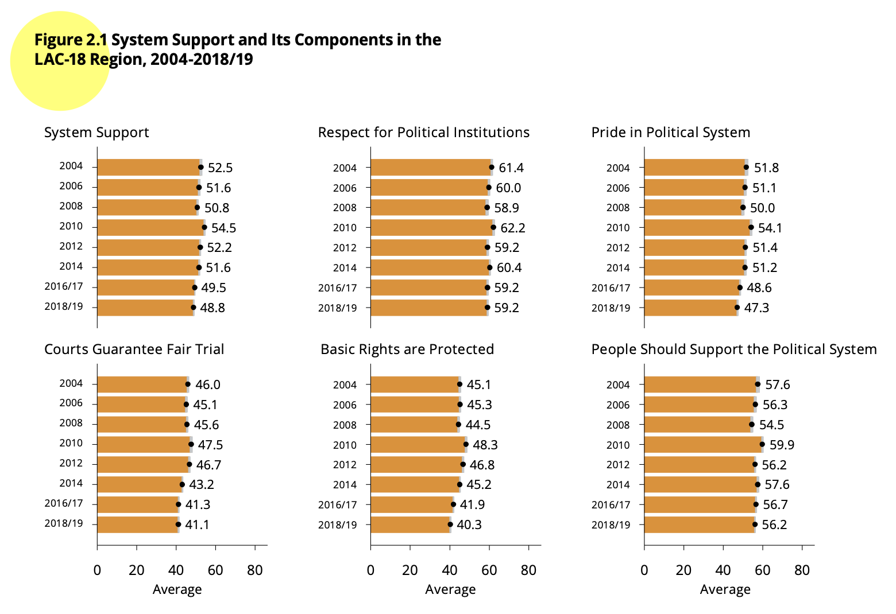
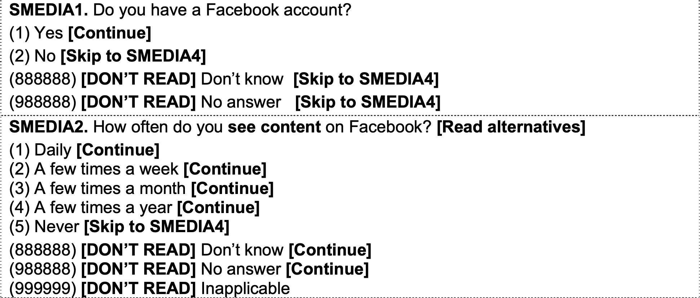

Introduction
This section will cover basic aspects of data manipulation, such as
recoding a variable, selecting data, and calculating a new variable. At
the end, there is a note about the statistical calculations considering
the design effect.
About the AmericasBarometer datasets
The data that we are going to use should be cited as follows: Source:
AmericasBarometer by the Latin American Public Opinion Project (LAPOP),
wwww.LapopSurveys.org.
In this section a dataset is loaded. This dataset is hosted in the
“materials_edu” repository of LAPOP’s GitHub account. Through the
library rio and the command import, this
database can be imported from this repository, using the following code.
The dataset is imported into the object “lapop21”. This dataset has an
extension .RData and when it is imported, variables are defined as type
double (“dbl”), which is a type of variable that allows decimals,
different from type integer, “int”, that only accept integers.
library(rio)
lapop21 = import("https://raw.github.com/lapop-central/materials_edu/main/lapop21.RData")
The dataset for the previous round of the AmericasBarometer is also
in this repository. We can load and call it “lapop18”. It is necessary
to clarify that this dataset, imported from a SPSS file, loads variables
as type numeric (“num”).
lapop18 = import("https://raw.github.com/lapop-central/materials_edu/main/LAPOP_AB_Merge_2018_v1.0.sav")
Recoding a variable
In this section we will use the report “The Pulse of Democracy” that
presents the results for the 2021 round of the AmericasBarometer,
available here.
This report presents the results on support for democracy in the
Americas. These results are based on the variable called ING4 in the
dataset. This variable is worded as follows:
ING4. Changing the subject again, democracy may have problems,
but it is better than any other form of government. To what extent do
you agree or disagree with this statement?
This variable is measured in a 1-7 scale, where 1 means “strongly
disagree” and 7 means “strongly agree”. Then, values from 5 to 7 are
recoded as support for democracy. To see the distribution of responses
to this variable, you can use the table command.
table(lapop21$ing4)
##
## 1 2 3 4 5 6 7
## 5704 2567 4980 8177 13886 8390 16759
In this way, the observations (absolute frequencies) are calculated
for each value of the variable. To calculate the percentage of people
who support democracy, we have to recode this variable and create a new
one. It means that the original ING4, in a 1-7 scale, has to be recoded
in a new variable following this rule:
- Values between 1-4 of ING4 become 0 in a new variable ing4r
- Values between 5-7 of ING4 become 1 in a new variable ing4r
An example of how this recoded data is presented in the report can be
seen in Graph 1.1. This shows the percentage of citizens who support
democracy by country. That is, the percentage of respondents who
answered between 5 and 7 to the ING4 question in each country is shown.
According to the recoding, this graph would represent the percentage of
respondents who register a 1 in the recoded variable.

In the report The Pulse of Democracy for the 2018/19 round, available
here,
it is presented a similar figure, using the same variable and the same
rule for recoding.

To recode a variable in R there are several ways. One of the most
efficient ways to do this is by using the command recode
from the car package. The dplyr package has
also a recode command that can confuse R. To avoid
confusion we will specify in the syntax car::recode
recoding. The recoded variable is recorded as “lapop21$ing4rec”. Then,
the command table is used to describe this new
variable.
library(car)
lapop21$ing4rec <- car::recode(lapop21$ing4, "1:4=0; 5:7=1")
table(lapop21$ing4rec)
##
## 0 1
## 21428 39035
If the observations between 1 and 4 of the original variable are
added (1699 + 1470 + 3003 + 6089), we see that it is the result equals
the observations in value 0 of the new variable (12261), as it was
written in the recoding. It should also be noted that the dataset in the
Environment now has one more variable, totaling 1826 variables.
Selection of observations
The Figure 1.1 shows that support for democracy goes from a high of
80% in Uruguay to a low of 46% in Haiti. To replicate result
corresponding to Uruguay, we can select observations from this country.
According to codification of variable “pais”, Uruguay is coded as
14.

Selection of observations in R can be done in several ways. One way
is to use brackets. Other way is to use the command subset.
With this command, we select observations from this country and we save
this selection in a new dataframe “lapop1”. We have 3009 observations in
Uruguay and 1826 variables.
lapop1 = subset(lapop21, pais==14)
table(lapop1$pais)
##
## 14
## 3009
With this selection of data, you can calculate the percentages
(relative frequencies) using the command prop.table. This
command gives us the relative frequencies (in values between 0 and 1) of
a frecuency table calculated with table. These relative
frequencies are multiplied by 100 to reproduce the percentage in each
country. In this case, the brackets […] are used to make
the selection of cases from each country.
prop.table(table(lapop1$ing4rec[lapop1$pais==14]))*100
##
## 0 1
## 15.47499 84.52501
These results are percentages (between 0 and 100), but include many
decimal places. To round to one decimal, as shown in Graph 1.2, you can
use the command round, where all the previous syntax is
nested. In this command, you have to specify the number of decimal
places you want, which in this case is 1.
round(prop.table(table(lapop1$ing4rec[lapop1$pais==14]))*100, 1)
##
## 0 1
## 15.5 84.5
According to this result, 84.5% of Uruguayans support democracy. This
result is different from what it is reported in Figure 1.1, where
reported value is 80%. This difference is due to the fact that our
procedures do not include the effect of complex design features, such as
weights, stratification, and cluster sampling. Below, we present
procedures to reproduce precise reported results.
The report for the 2018/19 wave indicates “Figure 1.2 displays the
percent of individuals in each country that expresses support for
democracy in 2018/19. Support for democracy ranges from a low of 45% in
Honduras to a high of 76.2% in Uruguay.” (p. 11).
For replicating these results about Honduras and Uruguay for the
2018/19 round, we can select observations for these two countries.
According to the questionnaire, available HERE, Honduras is coded as 4
and Uruguay as 14 in variable “pais”, that is imported as a numeric
variable.
We include the operator “or”, that is written as “|” in R. In this
way, we can select observations from Honduras or Uruguay using
pais==4 | pais==14. The description of variable “pais”
shows that it includes only observations for Honduras (2) and Uruguay
(14).
lapop2 = subset(lapop18, pais==4 | pais==14)
table(lapop2$pais)
##
## 4 14
## 1560 1581
The new dataframe “lapop2” has 3141 observations and 84 variables. It
does not include a recoded variable for support for democracy. We
proceed to include it.
lapop2$ing4rec <- car::recode(lapop2$ing4, "1:4=0; 5:7=1")
With this variable, we can follow the same procedures as before:
produce a relative frequency table.
prop.table(table(lapop2$ing4rec[lapop2$pais==4]))*100
##
## 0 1
## 54.98995 45.01005
prop.table(table(lapop2$ing4rec[lapop2$pais==14]))*100
##
## 0 1
## 23.80641 76.19359
And then, we include rounding.
round(prop.table(table(lapop2$ing4rec[lapop2$pais==4]))*100, 1)
##
## 0 1
## 55 45
round(prop.table(table(lapop2$ing4rec[lapop2$pais==14]))*100, 1)
##
## 0 1
## 23.8 76.2
With this code, we have reproduced results for countries in the
extremes of Figure 1.2. In this case, results are similar to the ones
reported in the figure in the report.
Both reports also indicate that the United States and Canada are
excluded from the calculations. The dataset loaded as “lapop18” includes
all the countries in the round. To exclude these two countries, we have
to select the countries that are NOT USA and Canada. This new selection
can be saved in a new dataframe or it can be overwritten in the original
dataframe, as it is done in this case because the exclusion of these
countries is for all the calculations that follow. According to the
questionnaire, USA has the code 40 and Canada, the code 41 in the
variable “pais”. To exclude them, countries with a code of less than 40
(or 35 or less) must be included. For this we can again use the
subset command.
lapop18 <- subset(lapop18, pais<=35)
It can be observed in the Environment that the observations of the
“lapop18” dataframe are reduced after running this code, since the
observations of repondents in these two countries have been eliminated.
The number of observations goes from 31,050 to 28,042, a number that
coincides with that of the dataset in .RData format that we used in the
previous module and that we indicated that it did not include these
countries.
In the same way, we can proceed in the 2021 wave dataset. After this,
observations decrease to 60,661.
lapop21 = subset(lapop21, pais<=35)
Calculating a variable
A frequent LAPOP practice with the AmericasBarometer data is the
rescaling of variables. The report’s chapter on democratic legitimacy
provides examples of this rescaling with variables related to support
for the system. To calculate this index for system support, we work with
a set of five variables:
B1. To what extent do you think the courts of (country) guarantee a
fair trial? . To what extent do you respect the political institutions
of (country)?
B2. To what extend do you respect the political institutions of
(country)?
B3. To what extent do you think the basic rights of the citizen are
well protected by the political system of (country)?
B4. To what extent are you proud to live under the political system
of (country)?
B6. To what extent do you think the political system of (country)
should be supported?
As the report indicates “For each question, the original scale from 1
(” Not at all “) to 7 (”A lot”) is recoded on a 0-100 scale, in such a
way that 0 indicates the lowest level of support for the political
system and 100 is the highest level of support for the political system.
This new scale follows the typical LAPOP recoding and can be interpreted
as a measure of support in units, or degrees, on a continuous scale
ranging from 0 to 100” (p. 34). To check the original scale of these
variables, we can describe these variables using the table
command.
table(lapop18$b1)
##
## 1 2 3 4 5 6 7
## 4089 4067 5881 6137 4215 1631 1371
table(lapop18$b2)
##
## 1 2 3 4 5 6 7
## 2861 2152 2998 4153 5182 4448 5679
table(lapop18$b3)
##
## 1 2 3 4 5 6 7
## 5080 4096 5153 5349 4219 2061 1491
table(lapop18$b4)
##
## 1 2 3 4 5 6 7
## 5095 3206 3743 4557 4326 3041 3584
table(lapop18$b6)
##
## 1 2 3 4 5 6 7
## 3713 2325 2971 4277 4616 3868 5572
It is observed that all the variables run on a scale from 1 to 7. To
rescale a variable from an original scale from 1 to 7 to another from 0
to 100, the first thing to do is subtract 1 unit, so the variable would
have a scale of 0 to 6, then divide it by 6, with which would vary
between 0 and 1 and, finally, multiply it by 100. this is:
Rescaled variable = ((original variable -1)/6)*100
lapop18$b1rec <- ((lapop18$b1-1)/6)*100
lapop18$b2rec <- ((lapop18$b2-1)/6)*100
lapop18$b3rec <- ((lapop18$b3-1)/6)*100
lapop18$b4rec <- ((lapop18$b4-1)/6)*100
lapop18$b6rec <- ((lapop18$b6-1)/6)*100
table(lapop18$b1rec)
##
## 0 16.6666666666667 33.3333333333333 50
## 4089 4067 5881 6137
## 66.6666666666667 83.3333333333333 100
## 4215 1631 1371
With this transformation, it is observed that the 4,089 interviewees
who scored 1 in question B1 now have a score of 0. The 4,067 who scored
2 now have a score of 16.67, that is 2-1=1/6=0.1667*100=16.67. This same
operation could be done with the car :: recode command,
following this recoding rule:
- Value of 1 in original variable is recoded as 0 in new variable
- Value of 2 in original variable is recoded as 16.67 in new
variable
- Value of 3 in original variable is recoded as 33.33 in new
variable
- Value of 4 in original variable is recoded as 50 in new
variable
- Value of 5 in original variable is recoded as 66.67 in new
variable
- Value of 6 in original variable is recoded as 83.33 in new
variable
- Value of 7 in original variable is recoded as 100 in new
variable
This way of recoding, however, is not very efficient. It is simpler
to use the formula to calculate the recoding. To calculate the system
support index, the report indicates that “The system support index is
the average of five questions: B1, B2, B3, B4 and B6” (p.46). In other
words, with the rescaled variables, the average of these five variables
has to be calculated for each individual (that is, in each row of the
dataset). This could be done by calculating the average manually.
System support = (b1rec + b2rec + b3rec + b4rec + b6rec)/5
In R we have the command rowMeans that is used to
calculate averages of certain columns for each row. The syntax
[, 86:90] indicates that the average calculation will be
performed by rows for all rows and using columns 86 to 90 of the
“lapop18” dataframe (the calculation could be done for some particular
rows by defining [ row_n: row_m, 86:90]). This average is
saved in a new variable “support”, which is described.
lapop18$apoyo = rowMeans(lapop18[,85:89])
table(lapop18$apoyo)
##
## 0 3.33333333333333 6.66666666666667 10
## 634 368 439 525
## 13.3333333333333 16.6666666666667 20 23.3333333333333
## 527 550 834 745
## 26.6666666666667 30 33.3333333333333 36.6666666666667
## 810 911 1063 1086
## 40 43.3333333333333 46.6666666666667 50
## 1287 1317 1254 1487
## 53.3333333333333 56.6666666666667 60 63.3333333333333
## 1397 1408 1449 1243
## 66.6666666666667 70 73.3333333333333 76.6666666666667
## 1227 1113 988 827
## 80 83.3333333333333 86.6666666666667 90
## 820 572 445 369
## 93.3333333333333 96.6666666666667 100
## 245 131 210
With this index, it is possible to calculate the average support for
the system for the last round of the AmericasBarometer, as well as the
averages for each of the variables that are included in the index. The
mean command is used for the average and the
na.rm = T specification is used to tell the command not to
take into account the missing values of these variables. These
statistics will be seen in more detail in other documents.
mean(lapop18$apoyo, na.rm=T) #system support
## [1] 48.79419
mean(lapop18$b1rec, na.rm=T) #courts guarantee fair trial
## [1] 41.06032
mean(lapop18$b2rec, na.rm=T) #Respect for institutions
## [1] 59.23937
mean(lapop18$b3rec, na.rm=T) #Basic rights are protected
## [1] 40.42406
mean(lapop18$b4rec, na.rm=T) #Pride in the political system
## [1] 47.41096
mean(lapop18$b6rec, na.rm=T) #The political system should be supported
## [1] 56.28337
These results are those shown in Figure 2.1 for the 2018/19
round.

Condicionally calculating a variable
Sometimes the calculation of a variable does not only require the
numerical transformation of the original variable, but the values of the
new variable depend on the values of other variables. For example, the
chapter “Social networks and political attitudes” of the report “The
Pulse of Democracy” presents the results for the variables “WhatsApp
user”, “Twitter user” and “Facebook user”. To calculate these variables,
footnote 7 of this chapter indicates: “For each platform, we identify
users with a combination of two sets of survey questions. First, we
identify users as those who respond positively to the questions,
SMEDIA1/SMEDIA4/SMEDIA7. Do you have a Facebook/Twitter/WhatsApp
account? Then, we recode as non-users those who respond”never” to the
follow-up questions, SMEDIA2/SMEDIA5/SMEDIA8. How often do you see
content on Facebook/Twitter/WhatsApp?” (p. 64).

That is, the user is not only the one who has an account (SMEDIA1 =
1), but the one who uses it with a certain frequency (SMEDIA2 = 1, 2, 3,
4). In this way, the non-user can have an account, but never use it.
Therefore, the variable “user” depends on the values of 2 variables. The
rule for coding is:
Facebook user = 1 (he/she is a user) if SMEDIA1 = 1 (he/she has
an account) and SMEDIA2 <= 4 (he/she uses it with some
frequency)
Facebook user = 0 (he/she is not a user) if SMEDIA2 = 2 (he/she
doesn´t have an account) or SMEDIA2 = 5 ( he/she has an account but
never uses it)
This rule transforms into the following R syntax, which uses the
command ìfelse. This syntax includes the condition to
assign values of 1 to a new variable and assigns all other observations
the value of 0. These new variables are described using the
table command to generate the absolute frequencies,the
prop.table command for the relative frequencies and the
round command to round the decimals. These commands will be
seen in more detail in the following documents.
lapop18$fb_user <- ifelse(lapop18$smedia1==1 & lapop18$smedia2<=4, 1, 0)
lapop18$tw_user <- ifelse(lapop18$smedia4==1 & lapop18$smedia5<=4, 1, 0)
lapop18$wa_user <- ifelse(lapop18$smedia7==1 & lapop18$smedia8<=4, 1, 0)
round(prop.table(table(lapop18$fb_user))*100, 1)
##
## 0 1
## 43.8 56.2
round(prop.table(table(lapop18$tw_user))*100, 1)
##
## 0 1
## 92.1 7.9
round(prop.table(table(lapop18$wa_user))*100, 1)
##
## 0 1
## 35.8 64.2
These results are those presented in Graph 3.1 of the report in the
form of pie charts. These types of graphs will be seen in the next
section.

Design effect observation
Both the results for system support and those of social network users
differ from those that appear in the report for two reasons. First,
about support the system, because “Cross-time values are calculated
including only those countries the AmericasBarometer has surveyed
consistently since 2006: Argentina, Brazil, Bolivia, Chile, Colombia,
Costa Rica , the Dominican Republic, Ecuador, El Salvador, Guatemala,
Honduras, Jamaica, Mexico, Nicaragua, Panama, Paraguay, Peru, Uruguay”
(p.46). The code only filters the last round, which includes countries
that are not on that list, such as the United States or Canada. On the
other hand, the calculations reported in the publication include the use
of survey weights, which have not been included in these calculations,
but which will be incorporated in other documents (see here).
Summary
In this document we have seen the basic elements of data manipulation
and transformation using the AmericasBarometer datasets. A variable has
been recoded using the recode command, cases have been
selected using subset and a new variable has been
calculated algebraically and with the ifelse command.
